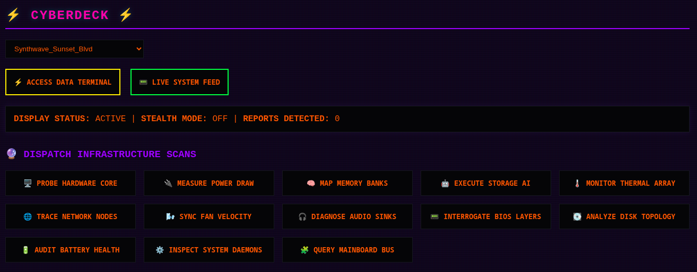
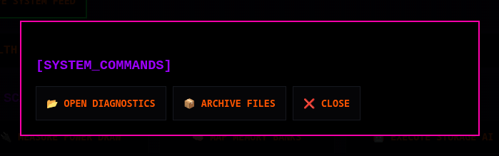
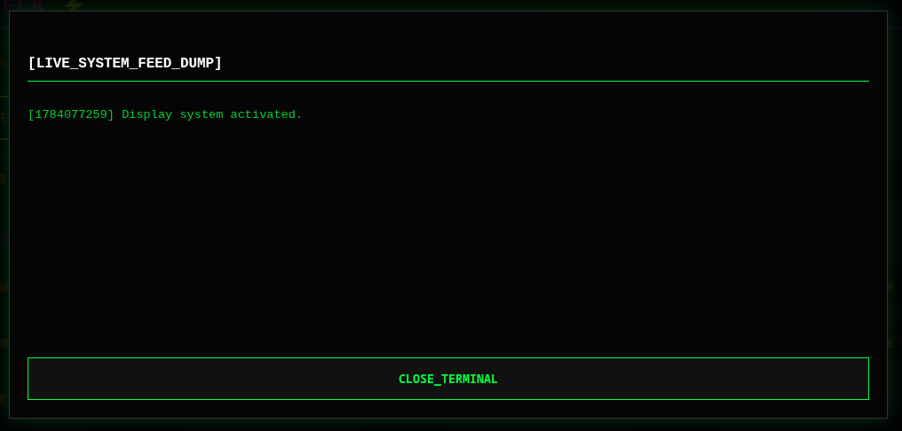

HARDWARE
Map CPU, motherboard, PCI, and USB topology into one diagnostic view instead of hunting across disconnected tools.
RUST // SYSTEMS INTELLIGENCE // LOCAL FIRST
Cyberdeck turns hardware, thermals, storage, networking, and system state into one modular intelligence surface—fast enough for a live investigation, structured enough for the next diagnostic.
dispatch infrastructure scans
live system state
thermal headroom
storage health
Structured output ready for Markdown, JSON, or the next operator.
the intelligence surface
A decoupled module registry keeps the framework extensible while each domain stays legible, testable, and useful on its own.
Map CPU, motherboard, PCI, and USB topology into one diagnostic view instead of hunting across disconnected tools.
Poll P-states, governors, and thermal zones with enough granularity to see a trend before it becomes a failure.
Turn SMART data from NVMe, SSD, and HDD devices into an intelligence layer you can archive and compare.
Inspect interfaces, routing, sockets, and reachability as one real-time network intelligence pass.
captured in the console
The current UI keeps the operator in context: dispatch a scan, open a system command, inspect files, or stream the live feed.



the scan pipeline
Cyberdeck’s loop is deliberately boring in the best way: gather state, make it legible, then leave an artifact you can inspect later.
Run one module or a full scan from the panel. Tokio keeps the framework ready for concurrent system work.
Surface status, thermal, power, and topology signals in an operator-readable control surface.
Generate FULL_REPORT.md, structured JSON, or archived diagnostics for comparison and AI-assisted review.
boot sequence
Install the Linux dependencies, build the Rust framework, then run a full scan when you want the complete system report.
git clone https://github.com/cybercore-tech/cyberdeck.git && cd cyberdeck && cargo runRead the docs in the repository ↗ · Join the Discord ↗